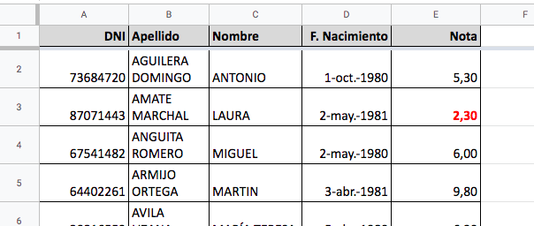
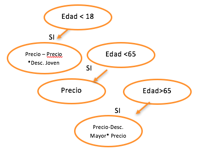

Puedes abrir Hojas de cálculo de cualquiera de las siguientes maneras:
- En cualquier navegador web: ve a sheets.google.com.
- Google Drive: haz clic en Nuevo > Hojas de cálculo de Google y crea una desde cero o a partir de una plantilla.
- En la mayoría de las páginas de Google: en la esquina superior derecha, haz clic en el Menú de aplicaciones > Hojas de cálculo.
También podemos crear una nueva escribiendo directamente en la barra del navegador:
o bien
EJERCICIO 1
El objetivo de este ejercicio es obtener la siguiente tabla de datos y conocer las funciones de formateo de datos y visualización de la herramienta.
Para comenzar este ejercicio debemos abrir el archivo Modulo1, que tenemos en la carpeta compartida "Alumnos curso hoja de cálculo" (solo con cuentas de la UJA) : https://drive.google.com/drive/folders/1EK-R7NMlL-_hmRzwPPECpaJ3tiCsVTW7?usp=sharing y concretamente en el enlace https://docs.google.com/spreadsheets/d/1ybtQO1mroLQR4TKkKdRbYlkYfnBvnGQTy3KjIvHgMTk/edit?usp=sharing
- Realizamos una copia y guardarla en nuestra carpeta. Para ello hay que pulsar a Archivo → Hacer una copia y en el formulario que se abre ponerle nombre al archivo: Modulo1_TUNOMBRE y guardarla en tu carpeta deseada.
- Creamos una fila nueva, en la parte de arriba, y rellenamos con los nombres de los campos: DNI, Nombre, Apellidos, F.Nacimiento, Nota.
(Se pulsa sobre la fila → Botón derecho del ratón, pulsar Insertar 1 encima)
- Damos un formato muy básico a los campos de la fila de arriba; Negrita y Sombreado gris. Para ello usar la barra de herramientas que se encuentra encima de la hoja de cálculo.
- Seleccionamos TODAS las celdas de notas suspensas a la vez (usando Ctrl + pulsar celdas suspensas) y las ponemos en Rojo y Negrita.
- Ponemos las notas con formato de dos decimales pulsando el botón. Para ellos seleccionamos todas las celdas de notas. Lo haremos con el teclado que es más rápido: nos vamos a la primera celda de notas (con un 5.3), y pulsamos Ctr+Dirección Abajo+Shift. A continuación se pulsa el botón del menú Formato → Número.
- Ponemos líneas entre las celdas, sólo en la tabla de notas. Para ello seleccionar toda la tabla (desde la primera celda Ctr+Dirección Dcha+Shift y Ctr+Dirección Abajo+Shift). A continuación pulsar en la barra de herramientas , símbolo de tabla y pulsar en botón deseado.
- Ampliamos el tamaño de la celdas a mano (desde el encabezado) para que quepa el nombre completo del alumnos, únicamente.
- Para ajustar automáticamente el tamaño de la tabla para que quepa todo el texto en el tamaño manual de las celdas que hemos dejado tenemos que seguir estos pasos. Seleccionar todas las filas o toda la tabla que se desea ajustar. En nuestro caso seleccionamos toda la tabla hasta la fila 51, y pulsamos: Formato→ Ajuste de texto → Ajuste. El resultado es el ajuste en el tamaño de la celda especificado. Por defecto está desbordamiento, que significa que si la siguiente celda no está ocupada, ocupa el espacio de la misma la celda que desborde.
(Nota: Si queremos volver al estado original, tenemos que pulsar a la opción Recorte)
- Combinamos la columna A, de la fila 55, desde las columnas A-E, para indicar la hora de la revisión sin que el texto se corte, y alineamos a la izquierda.
- En la celda A56, se modifican las características de la misma para que solape otras celdas. Para ello pulsamos en Formato → Ajuste del texto → Desbordamiento
- Cambiamos el nombre de la hoja a Ejercicio1
- Damos formato a la fecha, para que podamos ver el mes donde nacieron. Para ello se selecciona a partir de la columna D (podemos pulsar directamente en la columna D y se selecciona toda). Pulsamos Formato → Número --> Mas Formatos → Mas formatos de fecha y hora y nos sale un cuadro para seleccionar el formato específico. Seleccionamos el que nos muestra el mes de manera abreviada.
El resultado es el que tenemos a continuación.

- Damos formato a las diferentes filas de manera alterna y rápida. Selecciona todos los datos desde la fila 2-51. Recuerda, desde la celda A2, Ctrl+ Shift + Cursor Derecha y Cursor Abajo. Pulsar Formato → Colores alternos.
- A la izquierda se abre un panel, donde se pueden configurar esto colores de manera automática. Seleccionar que no queremos aplicar estos colores alternos en la primera fila, es decir en el encabezado. Si lo deseas puedes cambiar los colores alternos a los que más te gusten, e incluir el encabezado, volviendo a realizar la selección o modificando la que hay.
- Ocultamos las columnas Fecha, el nombre y apellidos. Seleccionamos las tres columnas desde arriba: B, C y D, y pulsamos botón derecho del ratón, y seleccionamos ocultar columnas B-D.
(Para volver a mostrarlas tienes que situarte sobre las columnas A y E a la vez, seleccionarlas y pulsar con el botón derecho de ratón a → Mostrar Columnas.)
- Ahora inmovilizamos el panel superior, para ello seleccionamos la primera fila completa y pulsamos a Ver→ Inmovilizar → 1 Fila.
Como veis, también se pueden inmovilizar varias filas y/o columnas.
(Recuerda que para quitar esto, hay que pulsar Ninguna fila)
- Por último queremos imprimir las celdas seleccionadas. Para ello seleccionamos todas las celdas que contienen datos, desde la A1 hasta la E56. Con las teclas, con situamos en la celda A1, y pulsamos Ctrl+Shift + Derecha, y después Ctrl+Shift+Abajo varias veces hasta llegar a donde queremos y pulsamos en Archivo → Imprimir . En el cuadro que aparece seleccionamos:
- Celdas seleccionadas
- Formato → Quitar líneas de cuadrícula (esto no se aprecia)
- Encabezados y pies de página → Números de página
Pulsamos a siguiente y guardamos como PDF.
Ejercicio 2
Abrimos el ejercicio Modulo 2 que está en la carpeta compartida "Alumnos curso hoja de cálculo" (solo con cuentas de la UJA) : https://drive.google.com/drive/folders/1EK-R7NMlL-_hmRzwPPECpaJ3tiCsVTW7?usp=sharing y concretamente en el enlace https://docs.google.com/spreadsheets/d/18mUvKOZVTZZexASksR7rDIm75y76IY00Mss561Fwm0w/edit?usp=sharing y copiamos el contenido en un nuevo archivo llamado Modulo2_TU NOMBRE en vuestra carpeta.
Tipos de datos
Comenzaremos con el ejercicio que aparece en la primera hoja llamada: Tipos.
Vamos a trabajar con los tipos de datos más básicos que gestiona la hoja de cálculo de Google. En general cuando se inserta un texto en una hoja de cálculo Google adivina el tipo de datos del que se trata, pero no siempre es así. Es bueno conocer de manera básica que son y dónde se encuentran los diferentes tipos de datos, por tanto vamos a rellenar las celdas de esta hoja, siguiendo estas especificaciones para obtener los resultados que se muestran a continuación:
- Fila 1: Todos los datos de la fila serán de tipo de dato Número. Para poder operar con los decimales.
- el B1 es un número sin decimales,
- el C1 es un número con tres decimales únicamente,
- D1 es un número con 1 decimal,
- E1 es un número con puntos de miles y dos decimales y
- F1 es un número con puntos de miles y decimales y con rojos los negativos. Aquí hay que ir a Formato → Número → Mas formatos → Formato de número personalizado
- G1 utiliza notación científica
- Fila 2: Tipo de dato Moneda:
- B2: Euros
- C2: Euros redondeados
- D2: Dólares estadounidenses
- Fila 3: Porcentaje.
- B3: 45%
- C3: 0,1%
- D3: 50%
- E3: 2,33%
- Fila 4: Formatos de fechas: para cada celda selecciona los siguientes formatos:
- B4: Convertir a fecha por defecto 30/12/1989
- C4: Convertir a fecha y hora por defecto
- D4: Convertir a fecha con texto: 14 de enero de 2018
- E4: Convertir a un formato concreto: 05-08-1930
Series
Nos vamos a la pestaña u hoja llamada Series. Rellenaremos cada columna desde la fila 1 hasta la fila 20 con los datos que se indican a continuación usando series. Para ello hay que arrastrar desde la esquina inferior derecha del ratón:
- A: Meses del año
- B: Primavera Verano Otoño e Invierno. Hay que seleccionar las 4 celdas y arrastrar.
- C: Repetir la misma palabra
- D: días de la semana
- serie incrementando 1. Hay que seleccionar los dos valores.
- serie de 5 en 5 euros. Hay que seleccionar los dos valores.
- serie repitiendo el mismo valor
- serie incrementando de uno en uno el día
- serie incrementado un año. Hay que seleccionar los dos valores.
Además vamos a ver la opción Datos → Validación de datos que es muy útil cuando queremos controlar la entrada de los mismos. Para ello, vamos a realizar dos pruebas en esta misma hoja.
- Vamos a realizar una lista desplegable, para ello, rellenamos un conjunto de celdas con los valores que queremos.
- Después seleccionamos las celdas donde se comprobará la validación, en nuestro caso la columna L.
- Pulsamos a Datos → Validación de datos y rellenamos el formulario.
- El ejemplo 2, consistirá en comprobar si un rango de valores está en el intervalo [20,29].
Funciones
Vamos a ver cómo funcionan en Hoja de cálculo las funciones. Para ello abrimos la pestaña de funciones e insertamos las funciones que se indican.
Es importante destacar que las funciones están disponibles en la opción de la barra superior, símbolo sumatoria. Dichas funciones, para conocer su comportamiento deberemos acceder a la ayuda de google, donde nos indicará cómo funciona.
En general una función se escribe en la celda de la siguiente manera:
= NOMBREFUNCION ( PARAMETRO ; PARAMETRO )
- Empezamos por igual =
- Ponemos el nombre de la función y paréntesis
- Dentro de los paréntesis va la celda donde se quiere actuar. ejemplos:
- una celda A2
- un rango A2:B4
- Si hay varios parámetros se separan con ;
Descripción:
- Fila 2: Operación de redondeo del valor de la celda E2
- Fila 3: Operación de truncado del valor de la celda E2
- Fila 4: Operación de suma con el rango A4:E4
- Fila 5: Operación de media con el rango A5:E5
- Fila 6: Operación de cuenta con el rango A6:E6
- Fila 7: Operación de cuenta de solo valores diferentes con el rango A7:E7
- Fila 8: Operación de traducción al inglés de un texto. Hay que especificar en que lenguaje está el texto, ej. "es" español, y a qué lenguaje queremos traducir, ej. "en" inglés.
- Fila 9: Operación concatenar dos celdas para obtener un texto más largo. Hay que poner las celdas que queremos concatenar, separadas con ;
- Fila 10, 11, 12: Extraer, el día, el mes y el año, de una fecha concreta.
- Fila 13: Devolver el día actual.
- Fila 14: Hacer un gráfico en miniatura de una serie concreta, para ello hay que usar la función: SPARKLINE (rango)
- Fila 15: Traer un dato de otra hoja de datos en otra URL
IMPORTRANGE ( dirección web de la hoja ; nombre de la celda )
=IMPORTRANGE ( A15; B15 )
Nota 1: Puedes hacer referencia a una URL poniéndola entre comillas, o bien a una celda que ya tenga una URL activa. Para ello, aprovechamos y creamos un tipo de dato de copiando la URL y pulsando a Formato → Insertar enlace
El nombre de la celda debe ir entre comillas.
Nota 2: Hay que permitir el acceso a las hojas que conectamos.
- Fila 16: Ahora vamos a traer un rango en lugar de una celda, para ello deberemos situarnos en la celda A16 especificar el rango de la Hoja 1!A1:B5.
- Curiosidad: Le podemos asignar nombre a este intervalo:
Por
- Fila 19: Vamos a traer una tabla completa de una URL a partir de la celda A19, por ejemplo:
Para ello hay que usar:
IMPORTHTML (direccionweb; tipodeelemento; indice), donde tipo de elemento es "table" o "list" en función del objeto que tenga la web, e índice es un número entero que indentifica a la tabla o lista en HTML.
=IMPORTHTML ( A18; "table"; 1 )
Otro enlace interesante que podemos probar es:
=importhtml("https://www.ujaen.es/gobierno/anuario/datos-estadisticos/la-uja-en-cifras"; "table";1)
En la página de ayuda podemos consultar el formato de las funciones https://support.google.com/docs/topic/9054603?hl=es&ref_topic=1382883
Referencias
Repaso de Referencias:
- Relativas: Las referencias de fila y columna pueden cambiar cuando copie la fórmula en otra celda, ya que las referencias son el realidad distancias relativas respecto a la fila y columna actuales
- Absolutas: Las referencias de fila y columnas no cambian cuando copia la fórmula, ya que son referencias a una celda concreta
- Mixtas: La referencia a la fila o la columna es relativa y la otra es de tipo absoluta.
AYUDA: El botón F4, nos permite poner automáticamente el símbolo de $ en las celdas.
Nos vamos a la pestaña u hoja llamada Referencias y resolvemos los cuadros de la siguiente manera:
- Únicamente se rellena la celda E3, y se copia este contenido a las celdas E4 y E5.
- Únicamente se rellena la celda E11 y F11, y se copia este contenido a las E12, E13 y F12, F13
- Únicamente se rellena la celda D23 y se copia este valor a todas las celdas de la tabla.
Condicionales
En la hoja Condicional, y rellenamos los huecos, utilizando la fórmula condicional
= IF (condición; operación si se cumple; operación sino) o la alternativa
- En la celda C6, que muestra el precio de la entrada de cine para dos tipos de usuarios, jóvenes (menores de 18 años) y adultos. A los jóvenes se les aplicará un descuento que se indica en la celda C4. Para solucionarlo debemos usar la función IF.
- En la celda C14, muestra el precio de una entrada de cine para 3 tipos de usuarios: jóvenes (menores de 18 años) y los jubilados (mayores de 65 años) que tendrán otro un descuento especial y los adultos, que no tienen ningún descuento. Este ejercicio deberá resolverse usando la función IF pero en debemos de procurar que se cumplan ambas condiciones, para ello existe una función que se llama AND, que hace la operación booleana, Y y devuelve Verdadero o Falso
Ej. Precio > 5 Y Precio < 10 se escribiría = "AND(B2>5;B2<10)"
- En la celda C23, muestra el precio de una entrada de cine para 3 tipos de usuarios: jóvenes (menores de 18 años), que tendrán un descuento especial, los jubilados (mayores de 65 años) que tendrán otro tipo de descuento y los adultos, que no tienen ningún descuento. Este ejercicio deberá resolverse usando la función IF pero anidada, es decir, siguiendo esta estructura, sin usar el AND.
- En la celda C31, muestra el mismo problema que el anterior, pero ahora proponemos la resolución con el comando IFS, ya que permite hacer las comparaciones por parejas. No tiene estructura de árbol, y deberemos tener en cuenta el orden en que se van evaluando las condiciones. El formato de la función es:
= IFS ( condicion;valor ;[condicion2:valor2]; [condiciónN:valorN])

Formatos condicionales. Orden de datos y filtrado. Gráficos sencillos.
Para hacer este ejercicio tenemos que activar la hoja llamada "Notas". Si no la visualizas, pulsa en la flecha de la derecha, situada en la barra de abajo a continuación de la última hoja visible.
En primer lugar vamos a rellenar la tabla con los siguientes datos. Ten en cuenta que sólo puedes rellenar la primera celda, y el resto se copia. Para hacerlo rápidamente, pulsa el símbolo + que te aparece en la esquina inferior derecha de la celda una vez que la tienes rellena.
- Celda F4: Ponemos la nota de la asistencia con la condición siguiente: Si la asistencia es mayor que 20 (el dato de la celda E3), la nota es de 10 (valor de la celda F3), sino la nota será de 0.
- Celda J4: Calculamos el valor de la nota de la P1 por su peso + P2 por su peso + P3 por su peso.
- Celda L4: Calculamos el total, computando la nota de asistencia por su peso + la nota de prácticas * peso y la nota de teoría * su peso, pero sólo si la nota de prácticas y de teoría son superiores a 5. En caso contrario, únicamente mostraremos la nota de teoría por su ponderación a secas, ya que no realizaría suma.
- Celda M4: Se sustituye la calificación numérica por las categorías de: "APR" para aprobado, "NOT" para notable, "SOB" para sobresaliente y "SUS" para suspenso.
A continuación:
- A toda la columna L se le da un formato de número con 2 decimales
- Selecciona toda la columna L y le vamos a dar un formato condicional a través de las opciones del menú Formato → Formato condicional. Una vez se abre el menú a la derecha seleccionamos que si la celda es menor que 5, ponemos dicha celda en un color rojo para que destaque.
- Selecciona toda la columna M completa y le damos un formato condicional a todos los valores de la siguiente manera: Si el valor es suspenso ponemos el texto de color rojo, si es notable, ponemos el texto de color azul, si es aprobado de color verde, y si es sobresaliente de color naranja. Para ir añadiendo formatos a una misma celda hay que pulsar a añadir otra regla.
- Selecciona la columna K, y le damos un formato condicional de escala de colores. Donde el valor más fuerte será para el 0 y el más suave para el 10.
Nos quedaría un resultado como este:
- A continuación vamos a ordenar los datos, primero por provincia, después por nota y por último por apellidos y nombre. Para ello seleccionamos desde la celda A4 a la M163 y pulsamos a Datos → Ordenar Intervalo. Vamos añadiendo criterios de ordenación por orden. Ten cuidado de tener desactivada la opción de que los datos tienen una fila de encabezado.
- Después, vamos a hacer un filtro, y sólamente vamos a dejar en la hoja los alumnos que han asistido al mínimo de clases y cuya calificación sea suspenso y sean de Jaén. Para ello,
- Seleccionamos la tabla completa pulsando a la cuadrícula que está a la izquierda de A y encima del 1.
- Nos vamos a Datos → Crear un filtro. Automáticamente nos sale en cada columna un símbolo de embudo o filtro
- Filtramos por Asistencia >=20. Para ello hay que filtrar por Condición con la condición "Mayor que"
- Filtramos por Calificación = SUS. Para ello hay que filtrar por color de texto Rojo.
- Filtramos por Población igual que Jaén. Para ello hay que filtrar por Valores, pulsar a Borrar, para de-seleccionar todo, y seleccionar a mano únicamente Jaén.
- Guardamos en Datos → Vistas de filtro→ Guardar como vistas de filtro: y ponemos nombre. Una vez que la tenemos creada, la tnedremos para siempre.
- Imprimimos la hoja actual, y el destino será un archivo PDF que llamaremos notas Jaen.
- Ahora quitamos el filtro, pulsando en Datos → Desactivar filtro. o en Datos → Vista de Filtro → Nada
- Creamos un nuevo filtro con la opción: Datos → Control de filtros.
- Insertamos uno que seleccione la nota de teoría, con el filtro de por Condición, que dicha nota sea mayor que 9.5
- Insertamos otro donde la nota de prácticas sea menor que 5.
Obtendremos el siguiente resultado.
- Quitamos los filtros. Dichos filtros se quitan borrándose de la hoja.
Una vez realizadas estas operaciones vamos a crear gráficos. Para crear un gráfico en Hojas de Cálculo de Google, tenemos primero que seleccionar los datos que queremos incluir. El programa nos sugiere un gráfico de acuerdo a estos datos.
Gráfico 1. Hacemos un diagrama de barras con las asistencias
- Seleccionamos los datos. En este caso podemos seleccionar toda la fila E
- Insertamos gráfico
- Por defecto se pone diagrama de barras. Podemos cambiarlo.
- Cambiamos el rango de datos que empiece en la fila 4.
- En el eje X seleccionamos las asistencias y Agregamos datos. Cambiamos la forma de agregar a recuento.
- Ponemos título en el gráfico y en la los ejes. Para ello vamos al menú personalizar.
- Descargamos el gráfico en pdf. Pulsamos en los puntos en la esquina superior derecha.
- Cambiamos el tipo de gráfico a sectores. Personalizamos el gráfico a 3d, en estilo del gráfico.

Gráfico 2: Tendencias en prácticas de los alumnos de Alcalá la Real.
- Ocultamos filas 2 y 3.
- Seleccionamos las celdas G4:I9 y A4:A9 a la vez
- Insertamos gráfico
- Cambiamos al tipo de gráfico de lineas
- Cambiamos filas por columnas porque por defecto no lo coge
- Ponerle títulos al gráfico
- La leyenda se pone abajo
- En personalizar Serie . Añadimos línea de tendencia
Gráfico 3. Histograma.
Con las filas 2 y 3 ocultas, seleccionamos la columna de notas completa.
Pulsamos a insertar gráfico,
Cambiamos de tipo de gráfico a histograma.
Cambiamos el tamaño de los segmentos a 1 en personalizar.
Repaso
Rellena los datos de la hoja "Ventas" teniendo en cuenta lo siguiente:
- Pon cada tabla con colores alternos
- Rellena las series de los meses
- La tabla de la izquierda significa cantidad de unidades. Son números no tienen decimales
- La tabla de arriba al centro significa precio. Es un tipo de dato de moneda y se tiene que mostrar el euro
- La tabla de arriba a la derecha es un porcentaje y se tiene que mostrar como tal
- El resto de celdas de las tablas vacías son de tipo moneda, con símbolo €
- Solo se rellenan las celdas G3 y H3, y se copian hacia abajo
- Sólo se rellenan las celdas G8 y H8 y se copian hacia abajo
Una vez realizadas estas operaciones vamos a crear gráficos. Para crear un gráfico en Hojas de Cálculo de Google, tenemos primero que seleccionar los datos que queremos incluir. El programa nos sugiere un gráfico de acuerdo a estos datos.
Gráfico 1. Ventas de productos en el año.
- Seleccionamos la tabla ventas completa.
- Pulsamos a Insertar → Gráfico
Automáticamente se nos ha creado un gráfico de dispersión con la suma de cada uno de los productos vistos por meses. Si queremos modificarlo, nos vamos al panel de la derecha que sale al pulsar sobre este gráfico
- Cambiamos el gráfico por uno de barras apilado al 100% en Configuración → Tipo de Gráfico
- En el mismo menú, opción Personalizar:
- Ponemos título del gráfico: Ventas
- Ponemos título del eje vertical: total de ventas
- En series: Activamos etiquetas en los datos
- En leyenda: Posición Abajo
- Movemos a un sitio de la hoja donde no nos moleste.
- Seleccionamos el gráfico y desplegamos el menú que aparece en la esquina superior derecha del mismo. En este menú hay varias opciones, vamos a seleccionar la de descargar en documento PDF.
Gráfico 2: Realizar un Gráfico combinado de la tabla 2, que contiene total de ventas y ganancias.
Hemos de modificar
- Cambiar los títulos de gráfico y ejes: Título, Título eje horizontal, Titulo eje vertical y la posición de la Leyenda
- Series: Aplicar sólo a la serie VENTAS: añadir etiqueta de datos, utilizar línea de tendencia, en la etiqueta de la línea de tendencia: usar una ecuación, y activar R2.
Ejercicio 3
Abrimos el ejercicio Modulo 3 que está en la carpeta compartida "Alumnos curso hoja de cálculo" (solo con cuentas de la UJA) : https://drive.google.com/drive/folders/1EK-R7NMlL-_hmRzwPPECpaJ3tiCsVTW7?usp=sharing y concretamente en el enlace https://docs.google.com/spreadsheets/d/1h1k-CT1LH6wnH0QfAWy9AHDyBeGujkAbyfE1HF9dXQo/edit?usp=sharing y copiamos el contenido en un nuevo archivo llamado Modulo2_TU NOMBRE en vuestra carpeta.
Consulta 1.
Seguimos en el mismo documento y abrimos la Hoja Consultas. Nos situamos en cualquier celda de la tabla y pulsamos a Datos → Tabla Dinámica. Nos aparece un menú sugiriendose de crear la tabla en una nueva hoja e indicándonos el rango de celdas donde están nuestros datos. La sugerencia suele ser correcta. Además, es interesante incluir la tabla dinámica en otra hoja para no estropear la vista de datos originales.
Vamos a solucionar la siguiente consulta:
"Número de países y habitantes que hablan cada idioma en cada continente."
Para ello tenemos que hacer los siguiente:
- Arrastramos cada campo al lugar correspondiente para resolver la distribución:
- Filas: Continente
- Columnas: Idioma
- Valores: Suma Total país
- Nos falta el campo de contar países, para conocer la cantidad de países que hablan dicho idioma. Para ello añadimos en campo Valores el campo países y operación Cuenta.
NOTA: Como vemos se podrá modificar o eliminar, lo que necesitemos hasta obtener el resultado deseado, arrastrando o borrando los campos correspondientes.
NOTA2: Fíjate que los campos de suma y cuenta se muestran en filas en lugar de en las columnas que es la opción por defecto.
- Vamos a modificar el texto de cada campo, nos vamos a las celdas B3 y B4 y ponemos los nombres B3: Total, y B4: Países. Automáticamente se cambian todos.
- Llamamos esta hoja: Consulta 1
Consulta 2
Ahora creamos una nueva tabla dinámica de forma similar al proceso anterior. Vamos a crear una nueva tabla en una hoja nueva, que llamaremos Consulta 2, para ello, seguimos el mismo proceso anterior para la creación. Nos situamos en la hoja original llamada Tabla 1 en cualquier celda, y pulsamos a Datos → Tabla dinámica.
La consulta a realizar será la siguiente:
Por cada país mostrará la suma de población urbana y rural clasificada por idioma y únicamente de América.
Recuerda
- Los valores son de los campos Rural y Urbana. Hay que incluirlos como Filas
- Filtra por el Continente: América
- Hay que cambiar los nombres de las filas de valores.
Consulta 3
Crea una nueva tabla dinámica que resuelva la siguiente consulta y llámala Consulta 3:
Listado de continentes, la suma de la población total por país y su previsión de crecimiento.
- Para ello primero vamos a realizar la consulta organizada por países (filas) y suma de total país.
- Cambiamos la cabecera de la columna por "Población actual"
- A continuación, en el campo Valores, añadimos uno nuevo llamado Campo Calculado. Añadiendo los valores como columnas.
- El nuevo campo se calcula haciendo la suma del campo ‘Total país' (observa que hay que ponerle comilla simple) por la previsión de crecimiento 8%.
- Cambiamos también el nombre de esta columna cuando obtenemos el resultado.
Consulta 4
Mostrar por cada idioma, el total de mujeres que lo hablan y su promedio y el total de hombres que lo hablan y su promedio de Europa y Asia.
Consulta 5
Muestre por cada continente un diagrama de barras con el total de hombres y mujeres.
Para ello primero genere la tabla dinámica con esta consulta y después realizar el diagrama. Llamamos a la nueva Hoja, Consulta 5.
Recuerda que no hay que mostrar totales en esta tabla.
Consulta 6
Muestre por cada idioma el total de países que lo hablan y además, se filtrará por Europa.
Llamamos a esta hoja Consulta 6.
Las Macros han sido creadas para facilitarnos la vida y ahorrarnos tiempo. Si tienes una tarea repetitiva y/o compleja, las macros suelen ser una buena opción en muchas ocasiones.
La forma de trabajo de macros en la hoja de cálculo de Google es usando la grabadora de macros y funciona como una grabadora de sonido, presionas el botón grabar (o llamado REC) y la grabadora comienza a grabar todos los sonidos que haya en el ambiente, ¿correcto? De la misma manera se comporta la grabadora de macros, solo que, en lugar de grabarlos sonidos, graba lo que hagas en pantalla.
Vamos a crear una macro pulsando a Herramientas → Macros.
Importante: Debes tener muy claro todas las acciones que vas a realizar una vez que pulsas a grabar porque se quedará todo almacenado.
- Creamos una nueva hoja de datos.
- Importamos el archivo CultivosDesc.txt desde Archivo → Importar. Ten en cuenta que este archivo tiene de separador ; y que queremos insertar los datos en la hoja actual.
- Pulsamos a grabar macros
Comenzamos. Tenemos que hacer el proceso lo más genérico posible.
- Seleccionamos la fila 1 y la ponemos en Negrita
- Seleccionamos la columna A y la ponemos en Negrita
- Cambiamos las cabeceras a: Cultivo Superficie Cantidad y Descripción
- Modificamos el tipo de datos de las columnas B y C a Numero.
- Seleccionamos la columna C para ponerla sin decimales.
- Creamos un gráfico de las columnas A y B de sectores y lo ponemos pequeño y a la derecha
- Creamos un gráfico de las columnas A y C de sectores y lo ponemos pequeño y a la derecha
- Grabamos la macro con el nombre: FormatoCultivos
- Para probarla, importamos en una hoja nueva el archivo CultivosDesc1.txt
- Ejecutamos la macro en Herramientas → Macros → FormatoCultivos
El resultado será el siguiente:
- Hacer lo mismo con el archivo CultivosDesc2.txt
Automatiza las tareas repetitivas con macros en Hojas de cálculo. Si necesitas ventanas, funciones o menús personalizados, puedes crearlos con Google Apps Script.
Revisa las prácticas recomendadas para macros
- Limita el número de acciones de una macro para obtener un rendimiento óptimo.
- Utiliza macros en el caso de operaciones que se repiten con frecuencia y que no necesitan mucha configuración.
- Asigna combinaciones de teclas únicas a las macros; se permite un máximo de 10 combinaciones por hoja. Puedes abrir otras macros desde Herramientas > Macros.
- Para evitar tener macros duplicadas, puedes aplicar una macro que hayas creado para una sola celda a varias celdas a la vez; solo tienes que seleccionar todas las celdas y activar la macro.
- Las secuencias de comandos de macros son específicas de cada hoja y solo se pueden usar en Hojas de cálculo; no funcionan en Documentos, Formularios ni Presentaciones de Google.
Grabar macros
- En Hojas de cálculo, abre una hoja de cálculo y haz clic en Herramientas > Macros > Grabar macro.
- Selecciona el tipo de referencia de celda que quieras utilizar.
- Realiza la tarea que quieras grabar y haz clic en Guardar.
- Dale un nombre a la macro y haz clic en Guardar.
- Haz clic en Herramientas > Macros > [tu macro] para ejecutar la macro.
Crear secuencias de comandos
- Haz clic en Herramientas > Editor de secuencias de comandos.
- Crea la secuencia de comandos.
Para obtener más información, lee la descripción general de Google Apps Script o consulta las guías sobre funciones personalizadas y macros.
Compartir con determinadas personas:
- Abre el archivo que quieras compartir. Es necesario que sea de tu propiedad o que tengas permiso para editarlo.
- Haz clic en Compartir.
- Introduce las direcciones de correo electrónico o los grupos con los que quieras compartir el archivo.
- Elige el tipo de acceso que quieres dar a los usuarios: Editor, Comentador o Lector.
- Haz clic en Enviar.
Compartir mediante un enlace:
- Abre el archivo y haz clic en Compartir.
- En Obtener enlace, haz clic en Copiar enlace.
- (Opcional) Para cambiar los permisos, haz clic en Cambiar y luego elige Lector, Comentador o Editor.
- Copia y pega el enlace en un correo electrónico o en otro lugar donde quieras compartirlo.
Consulta más información en el artículo Compartir archivos desde Google Drive.
En Documentos, Hojas de cálculo o Presentaciones, selecciona el texto que quieres comentar.- Haz clic en Comentar > Añadir comentario .
- Escribe un comentario en el cuadro.
- (Opcional) Para dirigir la tarea o el comentario a una persona específica, incluye un signo más (+) seguido de su dirección de correo electrónico. Puedes añadir tantas personas como quieras. Todas recibirán un correo electrónico con el comentario y un enlace al archivo.
- (Opcional) Para asignar el comentario a una persona concreta, marca la casilla Asignar a.
- Haz clic en Comentar o en Asignar.
IMPORTRANGE("https://docs.google.com/spreadsheets/d/abcd123abcd123", "hoja1!A1:C10")
En las hojas de cálculo (Google spreadsheet) de Google Drive hay una función muy útil llamada IMPORTRANGE que nos permite importar y sincronizar datos entre diferentes libros (u hojas).
Esta función tiene la siguiente sintaxis y trabaja de la siguiente forma:
|
|
¿Qué es la clave de la hoja de cálculo (spreadsheet key range)? y ¿cómo obtengo la clave de la hoja de cálculo?
Esta clave es un identificador de cada libro que la puedes encontrar en la misma URL, ya que esta tendrá un formato como el siguiente:
|
|
Simplemente copia la parte que aquí hemos marcado como [Key-del-archivo] y que estará compuesta por una cadena de caracteres y dígitos.
El segundo parámetro, la cadena_intervalo, es el rango de celdas que queremos importar y de qué hoja.
Por tanto, si queremos importar el rango de celdas de las 10 primeras filas desde la columna A a la C de la hoja llamada «hoja1», aquí tenemos un ejemplo de un caso de uso de la función:
|
|
Cuando usemos la función por primera vez entre dos libros nos dará un error. Esto es porque los libros no tienen permisos para compartir información. Para ello, hacemos click sobre el error de la función y aparecerá un cuadro de diálogo preguntando si damos permiso para que se conecten. Hacemos click en Aceptar y listo.
NOTA: Hay que tener en cuenta que la función puede fallar al importar los datos si las dimensiones de la hoja destino es más pequeña que el rango que queremos importar. |
IMPORTHTML("http://en.wikipedia.org/wiki/Demographics_of_India";"tabla";4)
=IMPORTHTML("https://en.wikipedia.org/wiki/List_of_countries_by_population_(United_Nations)","table",2)
Listado de áreas de conocimiento:
Poner
=IMPORTHTML("https://www.ujaen.es/gobierno/anuario/datos-estadisticos/datos-generales/323-listado-de-areas-de-conocimiento";"table";"1")
Datos del paro
https://datosmacro.expansion.com/paro/espana/municipios/andalucia/jaen/jaen
=IMPORTHTML("https://datosmacro.expansion.com/paro/espana/municipios/andalucia/jaen/jaen";"table";"1")
https://www.diariojaen.es/servicios/feeds
=IMPORTFEED("https://www.diariojaen.es/rss/jaen.xml")
Paso 1: Busca el archivo que quieras compartir
Compartir un único archivo
En un ordenador, ve, Hojas de cálculo de Google.
Haz clic en el archivo que quieras compartir.
Haz clic en Compartir o en el icono Compartir
 .
.
Paso 2: Elige con quién quieres compartir el archivo y qué permisos quieres otorgar
Compartir con determinadas personas
Si utilizas una cuenta de Google a través de tu trabajo o centro educativo, es posible que no puedas compartir archivos fuera de tu organización.
Selecciona el archivo que quieras compartir.
Haz clic en Compartir o en el icono Compartir
.En "Compartir con personas y grupos", introduce la dirección de correo electrónico con la que quieras compartir el archivo.
Importante: Si compartes el archivo con una dirección de correo que no pertenezca a una cuenta de Google, estos usuarios solo podrán verlo.
Para cambiar qué pueden hacer los usuarios con tu documento, a la derecha, haz clic en la flecha hacia abajo
 Lector, Comentador o Editor.
Lector, Comentador o Editor.Elige que quieres notificar a las personas.
Si quieres notificar a las personas con las que has compartido un documento, marca la casilla junto a Notificar a las personas. Si quieres avisar a los usuarios de que compartes un archivo con ellos, cada dirección de correo electrónico que introduzcas se incluirá en el correo.
Si no quieres notificar a las personas, desmarca la casilla.
Haz clic en Compartir o en Enviar.
Compartir un enlace al archivo
Puedes enviar un enlace para que quienes lo tengan puedan usar el archivo. Cuando compartas un enlace a un archivo, tu nombre aparecerá como propietario del archivo.
Selecciona el archivo que quieras compartir.
Haz clic en Compartir o en el icono Compartir
Obtener enlace.En "Obtener enlace", haz clic en la flecha hacia abajo .
Elige con quién quieres compartir el archivo.
Para decidir qué pueden hacer los usuarios con tu archivo cuando lo compartas, selecciona Lector, Comentador o Editor.
Haz clic en Copiar enlace
Listo.Copia y pega el enlace en un correo electrónico o en otro lugar para compartirlo.
Compartir archivos públicamente
Importante: Si usas una cuenta de Google del trabajo o de un centro educativo, es posible que no puedas compartir elementos de forma pública.
Selecciona el archivo que quieras compartir.
Haz clic en Compartir o en el icono Compartir
Obtener enlace.En "Obtener enlace", haz clic en Configuración de enlaces .
Selecciona Enlace público
Guardar.Haz clic en Listo.
Copia y pega el enlace en un correo electrónico o en otro lugar para compartirlo.
Este complemento te permitirá fusionar un borrador de correo de Gmail con los datos de una hoja de cálculo GSheet.
Desde una hoja de Google Spredsheet (sheet.new) selecciona "Complementos" y "UJA- Mail Fusion".
Debes tener la primera columna de correos electrónicos con el título "EMAIL" y una plantilla en gmail.


Complemento de Hojas de Cálculo